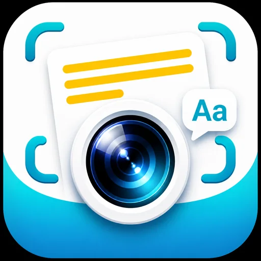

ReadShot
看到值得记的句子，拍一张就好。App 把文字取出来、帮你读懂，再排进复习队列——不用再截一堆图存在相册里发霉。 See a sentence worth keeping? Take a photo. ReadShot pulls the text out, helps you read it, and queues it for review — instead of screenshots rotting in your camera roll.
查看详情View project ↗